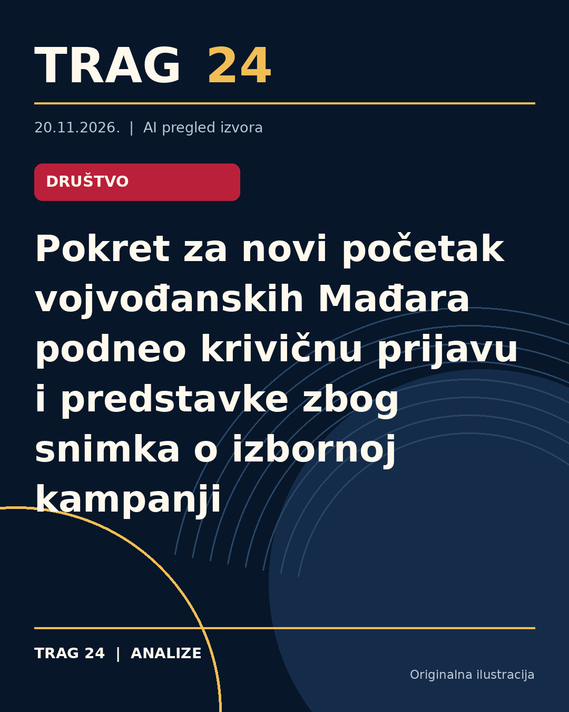

Pokret za novi početak vojvođanskih Mađara podneo krivičnu prijavu i predstavke zbog snimka o izbornoj kampanji

ŠTA SE DOGODILO
Pokret za novi početak vojvođanskih Mađara podneo je krivičnu prijavu i tri predstavke nadležnim institucijama zbog navodne stigmatizacije svoje zajednice, mogućih zloupotreba ličnih podataka birača i okolnosti političke mobilizacije tokom izborne kampanje. Povod za ove postupke je audio-snimak koji pojedini mediji povezuju sa Arpadom Fremondom, dosadašnjim predsednikom Mađarskog nacionalnog saveta (MNS). Na snimku se pominje angažman oko 800 aktivista za dostavljanje izbornih pošiljki, naknada i politička uputstva za aktiviste.
HRONOLOGIJA
Nakon pojavljivanja audio-snimka u medijima, Pokret je podneo krivičnu prijavu Posebnom odeljenju za suzbijanje korupcije Višeg javnog tužilaštva u Novom Sadu, zatim predstavku Agenciji za sprečavanje korupcije radi provere finansiranja aktivnosti, te treću predstavku Povereniku za informacije od javnog značaja i zaštitu podataka o ličnosti sa zahtevom za utvrđivanje porekla i upotrebe ličnih podataka dvojnih državljana Srbije i Mađarske.
ŠTA NAVODE IZVORI
Svi izvori saglasno prenose da je predmet krivične prijave audio-snimak na kojem se, prema navodima pokreta, govori o organizovanju aktivista i mogućim zloupotrebama ličnih podataka birača. Navodi uključuju i pominjanje naknada za aktiviste, kao i politička uputstva tokom izborne kampanje. Pokret izražava zabrinutost zbog stigmatizacije mađarske zajednice zbog različitih političkih stavova i pravljenja spiskova građana na osnovu političkih opredeljenja ili komentara na društvenim mrežama.
ŠTA JE POTVRĐENO
Potvrđeno je da je Pokret za novi početak vojvođanskih Mađara podneo krivičnu prijavu protiv nepoznatih osoba i tri predstavke nadležnim institucijama sa zahtevom za ispitivanje okolnosti vezanih za snimak. Takođe je potvrđeno da se navodi odnose na angažovanje velikog broja aktivista u izbornoj kampanji i moguće zloupotrebe ličnih podataka dvojnih državljana.
ŠTA NIJE POTVRĐENO
Nije potvrđeno da li su lični podaci birača zaista zloupotrebljeni i na koji način, kao ni da li je Arpad Fremond direktno uključen u dogovore prikazane na snimku. Takođe, do sada nema informacija o ishodu bilo kakve istrage ili službene potvrde navoda iz samog snimka.
ŠTA OSTАJE OTVORENO: Ostaje nejasno koja je pravna osnova za pribavljanje i korišćenje ličnih podataka dvojnih državljana i da li je bilo korišćenja javnih sredstava ili institucionalnih resursa u političke svrhe. Takođe nije poznato kako će nadležne institucije postupiti po podnetim prijavama i predstavkama, niti kakve će dalje mere biti preduzete.
Izvori
- https://nova.rs/vesti/politika/pokret-za-novi-pocetak-vojvodjanskih-madjara-podneo-krivicnu-prijavu-i-tri-predstavke-zbog-snimka/
- https://www.danas.rs/vesti/drustvo/pokret-za-novi-pocetak-vojvodjanskih-madjara-podneo-krivicnu-prijavu-i-tri-predstavke-zbog-mogucih-zloupotreba-licnih-podataka-biraca/
- https://n1info.rs/vesti/pokret-za-novi-pocetak-vojvodjanskih-madjara-podneo-krivicnu-prijavu-i-tri-predstavke-zbog-snimka/
Ova analiza je pripremljena uz pomoć veštačke inteligencije na osnovu javno dostupnih izvora. Navodi izvora nisu nužno nezavisno potvrđeni.